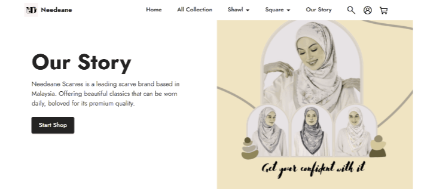
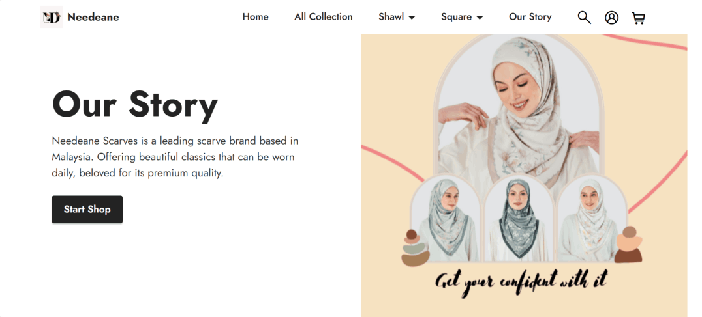
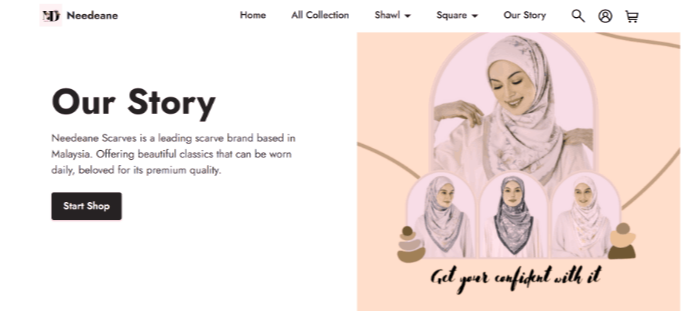
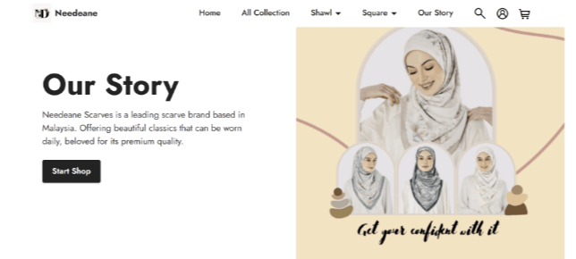
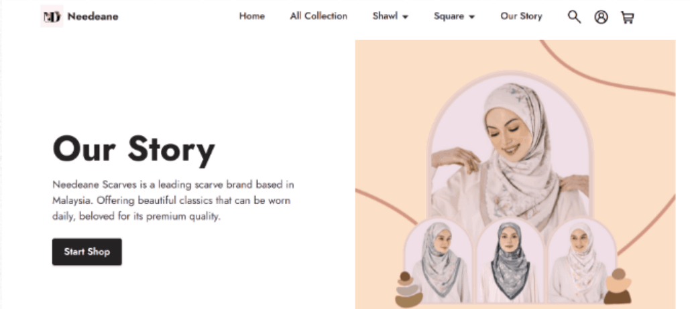

Red-green colour blind is the most common variety of color deficiency in humans. It happens to people who can not see shades of red and green the same way as people with normal colour perception do.
Most of us experience color about the same way. Our eyes capture light in certain wavelengths. Then, the brain interprets these waves as shades of red, green and blue. But a few people have trouble seeing red and green, and some see no red or green at all. Otherwise, their vision works pretty much the same as anybody else’s.
What are the four types of red-green color blindness?
Red-green color deficiencies come in four varieties based on how much of each colour people perceive:
1. Red-blind (protanopia) – Red can not be seen.
2. Green-blind (deuteranopia) – Green can not be seen.
3. Red-weak (protanomaly) – Some red is visible; green and blue are normal.
4. Green-weak (deuteranomaly) – Some green is visible; red and blue are normal.
What does red-green color blindness look like?
It is a bit difficult to imagine a colour deficiency if you have normal vision. People who can not see red or green might perceive things the rest of us would think of as murky green with some blue and yellow tones. People with red-green colour blind also have difficulty making out the differences between pale shades and they tend to confuse orange and red tones.
If you are interested in how people colour blind see the world, check out this color-blindness simulator.
Example Image of Red-Green Colour Blind
1. Red-blind (protanopia)

Protanopia

Normal Vision
2. Green-blind (deuteranopia)

Deuteranopia
Normal Vision
3. Red-weak (protanomaly)

Protonomaly
Normal Vision
4. Green-weak (deuteranomaly)

Deuteranomaly
Normal Vision
Address
Needeane Scarves, No. 27, Jln Padi Emas 1/5, Bandar Baru Uda, 81200 Johor Bahru, Johor